Find your next adventure
Couples Resort
Activities
About our activities
No matter what time of year, there's always a lot to do at Couples Resort. Then again, who said you couldn't just relax in a deep padded chaise lounge on your own room deck and indulge in a favourite novel while resting in the soothing warmth of the day. Whatever you choose, you're sure to enjoy all of our activities
What you can do
Fishing
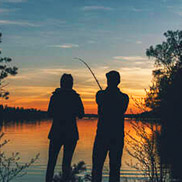Boats
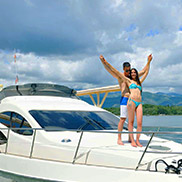Sports
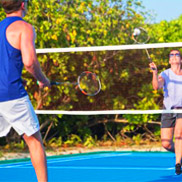Riding/Kayaks/Canoes
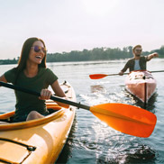Hiking & Biking
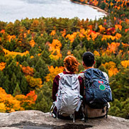Cross Country Ski/Snowboard
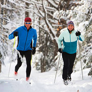Ice Hiking(Created HERE in 2o18)
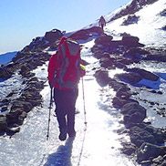Ice Skating
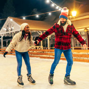Guided Snowmobile Tours
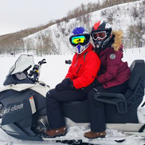Pool
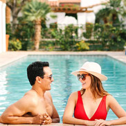Patios
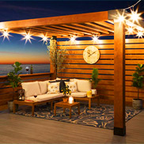Algonquin Adventure Tours
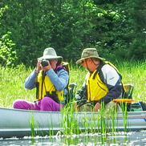ATVs
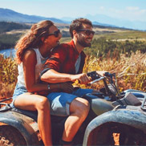Fall Sights
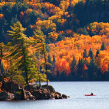Spring Sights
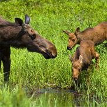Welcome to Algonquin Park
Couples Resort
Algonquin Park
About Algonquin Park
Algonquin Park, the first provincial park in Ontario, protected from the noise and rush of civilization, this world-renowned park in Ontario is a sanctuary for the rugged beauty of the maple, pine, moose, and wolves.
Just steps away from The Couples Resort, Algonquin's 7,630 square kilometres of forests, lakes, and rivers have assumed an almost incalculable importance as a living link with a vanishing past with a diverse and unblemished eco-system that can be found nowhere else on earth
About Algonquin's visitor center and loggin museum
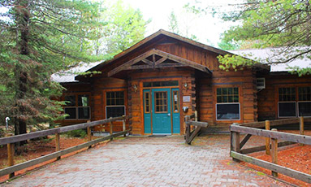Algonquin Park's two museums, the Visitor Centre and Logging Museum, are open daily (see the Events Calendar for specific operating dates and hours) offering all visitors park information, plus outstanding natural and cultural history exhibits
Our great lake
Couples Resort
Galeairy Lake
About Galeairy lake
Couples resort is located on the shores of Galeairy Lake, with direct access to Algonquin Park. Galeairy Lake is 11 kilometres (7 miles) long, land locked and extends mostly inside the boundaries of Algonquin Park . Explore the many secluded coves by canoe or kayak and search for loons, beaver, otter and moose. Pull up on shore, have a picnic and go for a swim. It is very clean and safe, with water temperatures hitting 25C (78F) by the end of July. Typically the lake temperature is above 18C (70F) from the third week of June to the first week of September.